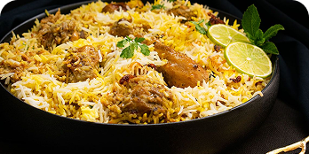

Platos tradicionales
Platos típicos de la India

Butter Chicken
Pollo cocinado en una cremosa salsa de tomate, mantequilla y especias.

Biryani
Arroz aromático preparado con especias, verduras o carne.

Masala Dosa
Crepa de arroz rellena de papas condimentadas, típica del sur de la India.

Palak Paneer
Queso fresco cocinado con espinacas y una mezcla de especias.